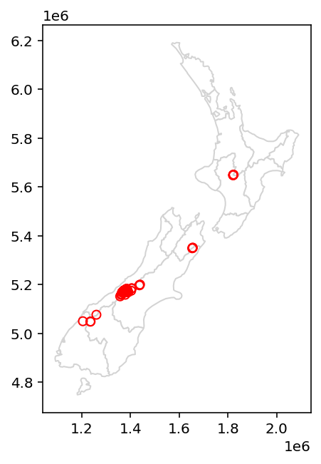
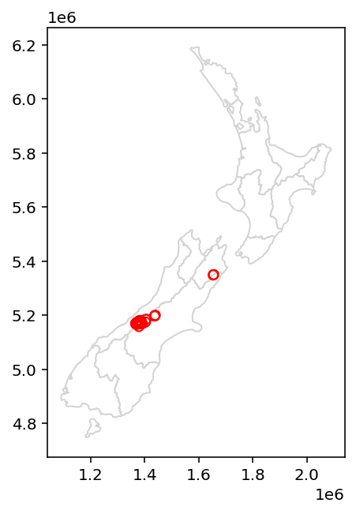
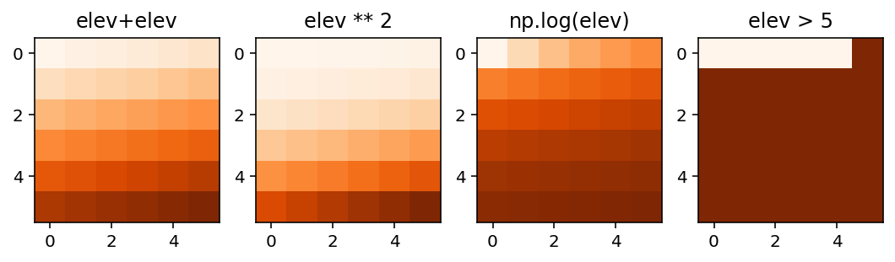

import pandas as pd
import matplotlib.pyplot as plt
pd.set_option("display.max_rows", 4)
pd.set_option("display.max_columns", 6)
pd.options.display.max_rows = 10
pd.options.display.max_columns = 6
pd.options.display.max_colwidth = 35
plt.rcParams["figure.figsize"] = (5, 5)4 Spatial data operations
4.1 Prerequisites
Packages…
import numpy as np
import geopandas as gpd
import rasterio
from rasterio.plot import showLet us load the sample data for this chapter:
Attempting to get the datanz = gpd.read_file("data/nz.gpkg")
nz_height = gpd.read_file("data/nz_height.gpkg")
src_elev = rasterio.open("data/elev.tif")
src_multi_rast = rasterio.open("data/landsat.tif")4.2 Introduction
4.3 Spatial operations on vector data
4.3.1 Spatial subsetting
Plot…
base = nz.plot(color="white", edgecolor="lightgrey")
nz_height.plot(ax=base, color="None", edgecolor="red");
Spatial subsetting…
canterbury = nz[nz["Name"] == "Canterbury"]
sel = nz_height.intersects(canterbury["geometry"].iloc[0])
canterbury_height = nz_height[sel]Plot…
base = nz.plot(color="white", edgecolor="lightgrey")
canterbury_height.plot(ax=base, color="None", edgecolor="red");
Spatial subsetting 2…
sel = nz_height.disjoint(canterbury["geometry"].iloc[0])
non_canterbury_height = nz_height[sel]Plot…
base = nz.plot(color="white", edgecolor="lightgrey")
non_canterbury_height.plot(ax=base, color="None", edgecolor="red");…
4.3.2 Topological relations
…
4.3.3 DE-9IM strings
…
4.3.4 Spatial joining
…
4.3.5 Non-overlapping joins
…
4.3.6 Spatial aggregation
…
4.3.7 Joining incongruent layers
…
4.3.8 Distance relations
…
4.4 Spatial operations on raster data
4.4.1 Spatial subsetting
…
4.4.2 Map algebra
…
4.4.3 Local operations
…
4.4.4 Focal operations
For focal operations, we first need to read raster values:
elev = src_elev.read()
elevarray([[[ 1., 2., 3., 4., 5., 6.],
[ 7., 8., 9., 10., 11., 12.],
[13., 14., 15., 16., 17., 18.],
[19., 20., 21., 22., 23., 24.],
[25., 26., 27., 28., 29., 30.],
[31., 32., 33., 34., 35., 36.]]], dtype=float32)Now, any element-wise array operation can be applied. For example:
elev + elevarray([[[ 2., 4., 6., 8., 10., 12.],
[14., 16., 18., 20., 22., 24.],
[26., 28., 30., 32., 34., 36.],
[38., 40., 42., 44., 46., 48.],
[50., 52., 54., 56., 58., 60.],
[62., 64., 66., 68., 70., 72.]]], dtype=float32)Here are few more examples:
fig, axes = plt.subplots(ncols=4, figsize=(9,5))
show(elev + elev, ax=axes[0], cmap="Oranges")
show(elev ** 2, ax=axes[1], cmap="Oranges")
show(np.log(elev), ax=axes[2], cmap="Oranges")
show(elev > 5, ax=axes[3], cmap="Oranges")
axes[0].set_title("elev+elev")
axes[1].set_title("elev ** 2")
axes[2].set_title("np.log(elev)")
axes[3].set_title("elev > 5");
Example of reclassify…
Here, we assign the raster values in the ranges 0–12, 12–24 and 24–36 are reclassified to take values 1, 2 and 3, respectively…
NDVI…
multi_rast = src_multi_rast.read()
nir = multi_rast[3,:,:]
red = multi_rast[2,:,:]
ndvi = (nir-red)/(nir+red)Convert values >1 to “No Data”:
ndvi[ndvi>1] = np.nanWhen plotting an RGB image using the show function, the function assumes that:
- Values are in the range
[0,1]for floats, or[0,255]for integers (otherwise clipped) - The order of bands is RGB
To “prepare” the multi-band raster for show, we therefore reverse the order of bands (which is originally BGR+NIR), and divided by the maximum to set the maximum value at 1:
multi_rast_rgb = multi_rast[(2,1,0), :, :]/multi_rast.max()Plot…
fig, axes = plt.subplots(ncols=2, figsize=(9,5))
show(multi_rast_rgb, ax=axes[0], cmap="RdYlGn")
show(ndvi, ax=axes[1], cmap="Greens")
axes[0].set_title("RGB image")
axes[1].set_title("NDVI");
plt.show()
4.4.5 Zonal operations
…
4.4.6 Global operations and distances
…
4.4.7 Map algebra counterparts in vector processing
…
4.4.8 Merging rasters
…